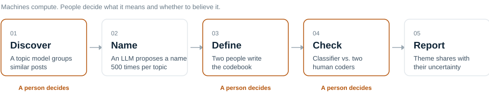
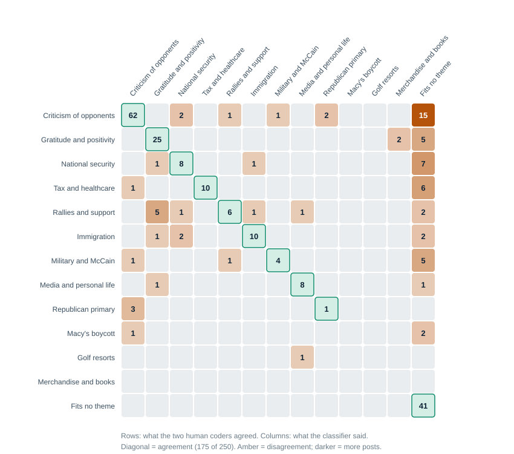

Summary
Topic models find recurring language, but measuring how often a defined theme occurs also requires interpretation, a codebook and a check against people. TopicLLM is pilot software, originating in dissertation research at The University of Texas at Austin, that connects five stages: transformer-based topic discovery, repeated large language model (LLM) naming, human theme definition, a classifier check, and prevalence reporting. A coding agent can execute every computational stage; the software stops at the decisions that belong to researchers and binds each decision to the evidence it approved. We add a simple rule for choosing a topic solution: no topic may hold a majority of the documents. We demonstrate the workflow in a tutorial on Donald Trump's Twitter archive, discovering themes in 7,805 campaign posts and measuring them in 26,239 first-term posts. In a human-coded random sample of 250 first-term posts, 84% (95% CI 79–88%) fit a campaign theme, and 33% (28–39%) criticized political opponents. The LLM classifier matched the human consensus on 70% of the sample and failed its 85% target; run on the full corpus for illustration, it assigned 40% of posts to the residual category, where people assigned 16%. The tutorial shows the check doing its job. The software has not been independently validated.
Keywords: computational content analysis; topic modeling; large language models; human-in-the-loop; measurement validity; coding agents
1. Statement of need
Researchers who study large collections of short texts ask two different questions: what recurring meanings appear, and how often does a defined meaning occur? Topic models help with the first. BERTopic, for example, clusters transformer embeddings and describes each cluster by its most distinctive words (Grootendorst, 2022). A cluster is not a measurement, though. The step from an attractive topic visualization to a defensible prevalence estimate runs through interpretation, a written codebook and an evaluation of the instrument that applies it. The Theme and Topic framework describes how topic modeling and qualitative practice can work together (Gillies et al., 2022).
Two developments make that step easier to skip. LLMs make naming and classification cheap, and coding agents can now run an entire analysis from a single instruction. TopicLLM is designed for that setting. It keeps five objects distinct: a topic (a cluster with a statistical description), a proposed name, a theme (a meaning defined by people), a classification (an operational assignment of a document to a theme) and a prevalence (the share of eligible documents receiving it). Each has its own evidence requirements, and the software records the transitions between them. The repository contains an agent contract (AGENTS.md) and a machine-readable protocol. An agent runs the Python, keeps every output and stops where people must decide.
2. The workflow

Discover. stage1_topic_discovery.py cleans the text (decoding HTML entities, removing URLs and handles, lemmatizing with NLTK; Bird et al., 2009) and embeds it with the all-MiniLM-L6-v2 sentence transformer, pinned to one revision (Reimers & Gurevych, 2019; Wang et al., 2020). BERTopic reduces the embeddings with UMAP (McInnes et al., 2018), clusters them with HDBSCAN (Campello et al., 2013) and describes clusters with class-based TF-IDF. A randomized search draws 50 configurations (Bergstra & Bengio, 2012) and reduces each to every topic ceiling from 2 to 25, giving 1,200 candidates scored by cv coherence (Röder et al., 2015). Every candidate's score, sizes and assignments are kept.
Name. stage2_democratic_naming.py sends each topic's top words to an LLM many times, with a fixed prompt at temperature 0.5, and tallies the normalized answers. The most frequent answer is a proposal. Its share measures the model's consistency, not its correctness or any agreement among people.
Define. stage3_synthesis_worksheet.py assembles each topic's words, ballots and sampled original documents into a local review workspace. Two researchers read the documents, decide which topics express a shared meaning, and write a codebook: each theme's definition, what to include and exclude, examples, and a rule for choosing one primary theme. review.py binds their attestation to hashes of the source, the topic assignments, the ballots, the map and the codebook. Changing any of these voids the approval.
Check. research_validation.py separates choosing a classifier from testing it. A held-out probability sample is drawn first. A development sample, which shares no IDs or exact texts with it, is used to choose between a transparent Boolean dictionary and an LLM classifier that receives the frozen codebook. The choice and its full specification are frozen before the held-out labels are opened. The default acceptance gate requires agreement strictly above 0.85 with the adjudicated human reference and, for every theme, positive support and nonzero recall. Passing is necessary but not sufficient: two researchers must read the errors and accept them before the corpus is classified.
Report. stage5_inference.py confirms that every target document was classified exactly once. It then reports each theme's count, the common denominator and the share, including zero-count themes and the residual (“the text does not fit into any of these themes”). Invalid or failed model responses block reporting; they are never folded into the residual.
Paid stages refuse to run without an explicit budget. A persistent ledger (api_budget.py) counts every attempt, cached response and conservative reservation across retries and resumed runs, and --plan reports record counts, planned calls and a rough cost before anything runs.
3. Choosing a topic solution
Selecting the candidate with the highest coherence is simple and reproducible, but coherence is a lexical diagnostic. As the authors of the stm package note, “attaining high semantic coherence was relatively easy by having a few topics dominated by very common words” (Roberts et al., 2019). Evaluation studies also find gaps between automated coherence and human judgments of topic quality (Doogan & Buntine, 2021; Hoyle et al., 2021). Nor is there a correct number of topics for a corpus (Grimmer & Stewart, 2013). TopicLLM therefore doesn't impose a topic count. It adds an admissibility rule that excludes the degenerate solutions coherence is known to favor:
A candidate is admissible if no topic holds more than half of the documents assigned to topics (max_topic_share = 0.5) and it has at least min_topics topics (default 2). Among admissible candidates, choose the highest coherence.
The unconstrained winner is still recorded, and stage 1 writes a sensitivity table showing which candidate wins across thresholds. Researchers can declare stricter values in the configuration before running.

In the tutorial, the unconstrained winner had two topics (cv = 0.609), with 99.5% of assigned posts in one heterogeneous cluster. The researcher rejected it after reading the posts and chose a 12-topic candidate (cv = 0.541; largest topic 34% of assigned posts). The rule selects the same candidate, and the selection is unchanged for any majority threshold between 0.34 and 0.98 and for any topic minimum from 4 to 12. The rule was written down after this run and applied retrospectively to every saved candidate; it is the default from version 0.7.0. It does not address coverage. HDBSCAN left 3,854 of the 7,779 modeled campaign posts (49.5%) unassigned, so the 12 topics describe the other half.
4. Tutorial: from Trump's campaign to his first term
4.1 Design
The tutorial uses one public archive: CodeBreaker619's Donald Trump Tweets Dataset (Kaggle, version 1), with 34,416 posts from June 16, 2015 to January 8, 2021. Topics are discovered only in the 7,805 campaign posts through Election Day, November 8, 2016. Of these, 26 were empty after cleaning, leaving 7,779 to model. The themes are then measured in the 26,239 first-term posts from January 20, 2017 to the archive's end. The 372 transition posts stay in the archive but are in neither view. The unit is the archived posting event, including retweets and staff-written posts. The tutorial's question is descriptive: what share of first-term posts expresses each campaign theme? It is a tutorial, not a study of its subject.
4.2 Naming and the codebook
Each of the 12 topics received 500 naming calls to GPT-4o (gpt-4o-2024-08-06; OpenAI, 2026), for 6,000 retained responses. The modal name's share ranged from 97% (a gratitude topic) to 8% (golf resorts). Two researchers reviewed the topics in two passes and kept all 12 as distinct themes, revising names and boundaries (Table 1). They broadened several definitions for presidential language: for example, rallies include presidential rallies, and the Republican-primary theme includes criticism of Republican figures. These are declared extensions, not evidence that the themes transfer.
| Theme kept by the researchers | Model's modal proposal | Posts | Modal share |
|---|---|---|---|
| Republican Primary Campaign Dynamics | Republican Primary Campaign Dynamics | 1,323 | 35% |
| Immigration Reform and Nationalism | U.S. Immigration and Nationalism During the 2016 Presidential Campaign | 758 | 20% |
| Campaign Rallies and Support in Key States | Campaign Rallies and Support in Key States | 577 | 22% |
| Criticism of Political Opponents | Criticism of Political Opponents and Email Controversy | 358 | 75% |
| Media Appearances and Personal Life Highlights | Media Appearances and Personal Life Highlights | 238 | 69% |
| Terrorism, National Security Concerns, and Criticism of Previous Administration | Terrorism and National Security Concerns During the 2015-2016 Presidential Campaign | 198 | 22% |
| Expressions of Gratitude and Positivity | Expressions of Gratitude and Positivity | 176 | 97% |
| Tax and Healthcare Policy | Healthcare Policy and Obamacare Critique During 2015-2016 Campaign | 98 | 13% |
| Issues related to Military Service and Criticism of John McCain | Veterans' Affairs and Military Service | 83 | 24% |
| Trump Campaign Merchandise and Book Promotions | Trump Campaign Merchandise and Book Promotions | 43 | 29% |
| Macy's Boycott and Consumer Relations | Macy's Boycott and Consumer Relations | 42 | 19% |
| Trump's International Golf Resorts and Openings | Trump's International Golf Resorts and Openings | 31 | 8% |
4.3 The check
Before choosing a classifier, 250 first-term posts were drawn by simple random sampling without replacement and set aside (seed 20261118). A 100-post development sample was then drawn from the remaining posts, excluding the held-out IDs and their exact texts. Two independent human coding passes covered both samples: each coder assigned one theme or the residual to each post using the frozen codebook, without seeing the other's labels or any model output. The coders then adjudicated every disagreement. On the development sample, the coders initially agreed on 85 of 100 posts (Cohen's κ = 0.81; Cohen, 1960). The LLM classifier matched the adjudicated reference on 64 posts and the Boolean dictionary on 30, so the LLM was selected and frozen.
On the held-out sample, the coders initially agreed on only 170 of 250 posts (68%; κ = 0.61) and adjudicated the other 80. The frozen classifier matched 175 of the 250 adjudicated labels: 70% agreement (95% Wilson interval 64.1–75.3%; Wilson, 1927; κ = 0.64). The classifier failed the gate: agreement was below 0.85, merchandise had no reference instances, and the Macy's and golf-resort themes had zero recall. Most errors ran one way. Of the 75 disagreements, 45 were posts the people coded with a substantive theme and the classifier assigned to the residual (Figure 5).
4.4 Prevalence from the human sample
Because the held-out posts are a simple random sample of the first-term view, the adjudicated human labels estimate theme prevalence directly, without the classifier (Figure 3; Table 2). Intervals are 95% Wilson intervals with a finite-population correction. Of the 250 posts, 209 fit one of the campaign themes: 84% (78.5–87.7%). Criticism of political opponents was the largest theme at 33.2% (27.7–39.2%), followed by gratitude and positivity at 12.8% (9.2–17.5%). Five themes fell between 4% and 7%. The campaign's one-off themes nearly vanished: the Macy's boycott at 1.2%, golf resorts at 0.4% and merchandise at 0%. People assigned 16.4% (12.3–21.5%) of posts to the residual. Broad themes such as criticism and gratitude would plausibly fit many political accounts, so the 84% describes coverage by this codebook, not continuity of a campaign.

5. What failed, and what it shows
Under the default workflow, a failed check stops the run. For the tutorial, the author recorded a demonstration-only exception that leaves the evaluation and the classifier's unvalidated status unchanged. The unchanged classifier was then run on all 26,239 first-term posts so that readers can see the final stage and its distance from the human estimate. Every target post received a valid label. The run used 26,263 attempted calls at an accounted cost of US$107.24, and the whole tutorial cost US$112.47 against a declared ceiling of US$150.

The classifier's shares mostly undercount the themes, and its residual is more than twice the human estimate (39.7% against 16.4%; Table 2). The confusion counts suggest why: the model was conservative, assigning a theme only when the post closely matched the written definitions. Redistributing the classifier's corpus counts by the human labels observed for each predicted label in the sample gives 81% of posts fitting a theme (bootstrap 95% interval 77–85%), close to the direct human estimate. This adjustment assumes that the sample's error pattern holds across the corpus, so it illustrates the size of the gap rather than replacing the human estimate.
| Theme | Human sample | 95% CI | Classifier |
|---|---|---|---|
| Criticism of Political Opponents | 33.2% | 27.7–39.2 | 26.4% |
| Expressions of Gratitude and Positivity | 12.8% | 9.2–17.5 | 12.1% |
| Terrorism, National Security Concerns, and Criticism of Previous Administration | 6.8% | 4.3–10.6 | 4.9% |
| Tax and Healthcare Policy | 6.8% | 4.3–10.6 | 2.0% |
| Campaign Rallies and Support in Key States | 6.4% | 4.0–10.1 | 3.1% |
| Immigration Reform and Nationalism | 6.0% | 3.7–9.6 | 5.6% |
| Issues related to Military Service and Criticism of John McCain | 4.4% | 2.5–7.7 | 1.6% |
| Media Appearances and Personal Life Highlights | 4.0% | 2.2–7.2 | 3.0% |
| Republican Primary Campaign Dynamics | 1.6% | 0.6–4.0 | 1.1% |
| Macy's Boycott and Consumer Relations | 1.2% | 0.4–3.5 | 0.1% |
| Trump's International Golf Resorts and Openings | 0.4% | 0.1–2.2 | 0.1% |
| Trump Campaign Merchandise and Book Promotions | 0.0% | 0.0–1.5 | 0.3% |
| The text does not fit into any of these themes | 16.4% | 12.3–21.5 | 39.7% |
The more instructive failure is human. The two coders agreed on 68% of held-out posts before adjudication, down from 85% on the development sample, even though both samples came from the same population. A classifier at 70% agreement with the adjudicated reference is about as consistent with the people as they were with each other. The binding constraint is the codebook, especially the boundaries among criticism, security and military themes and the treatment of retweets and short posts, not only the model. Research use would revise the definitions on development evidence, freeze a new classifier, and test it on a fresh held-out sample, repeating until the gate and the researchers' acceptance are both met. Reusing the opened sample as a test would not be an independent evaluation.

6. Limitations
TopicLLM is a pilot. Its software tests, source-integrity checks and published-arithmetic checks verify execution, not scientific validity. The method has not been independently replicated, and a successful tutorial run does not establish performance in another domain.
Each stage carries known weaknesses. Preprocessing removes handles, punctuation and stopwords, which can erase distinctions such as negation. HDBSCAN leaves many documents unassigned, half of them in the tutorial. Coherence rewards lexical regularity, and the admissibility rule guards against only one failure mode; it was formalized after the tutorial run. Repeated naming samples one model's biases. Hosted LLMs may have seen this public archive during training. Classification draws one response at temperature 0.5, so the tutorial does not measure the classifier's agreement with itself. Single-label coding compresses posts that carry several meanings.
The human reference is a working judgment, not ground truth: initial agreement was κ = 0.61, and themes with few sampled posts have wide intervals. Individual human labels and adjudication notes are kept private at the author's direction, so readers can recompute every published metric from aggregate confusion counts but cannot re-adjudicate the reference. Finally, the archive records one account's posting events, including retweets and staff-written posts. It cannot prove its own completeness, and its shares say nothing about public opinion, exposure or effects.
7. Availability
Source code, the tutorial corpus, every recorded artifact and the website are at github.com/jethomasphd/TopicLLM and topicllm.dev. The Python package (topicllm-research, version 0.7.0) requires Python 3.11 or newer; topicllm --profile quickcheck verifies an installation offline in seconds. scripts/check-published-metrics.py and scripts/estimate-human-sample-prevalence.py recompute the evaluation and prevalence figures from public aggregates, without API calls. The original research from which the software grew is preserved unchanged in a separate library at topicllm.dev/research/. Code is MIT-licensed and documentation is CC BY 4.0. The tweet text remains © its original authors and is not relicensed.
Acknowledgments and authorship
Jacob E. Thomas wrote the software and this paper. Two researchers conducted the theme review, and each independent coding pass was completed by a separate human coder; the retained records preserve each pass's initial judgments. AI tools assisted with software development and drafting; they were not counted as a researcher or a coder.
References
- Bergstra, J., & Bengio, Y. (2012). Random search for hyper-parameter optimization. Journal of Machine Learning Research, 13, 281–305.
- Bird, S., Klein, E., & Loper, E. (2009). Natural language processing with Python. O'Reilly Media.
- Campello, R. J. G. B., Moulavi, D., & Sander, J. (2013). Density-based clustering based on hierarchical density estimates. In PAKDD 2013 (pp. 160–172). https://doi.org/10.1007/978-3-642-37456-2_14
- CodeBreaker619. (2021). Donald Trump tweets dataset (Version 1) [Data set]. Kaggle. https://www.kaggle.com/datasets/codebreaker619/donald-trump-tweets-dataset
- Cohen, J. (1960). A coefficient of agreement for nominal scales. Educational and Psychological Measurement, 20(1), 37–46. https://doi.org/10.1177/001316446002000104
- Dieng, A. B., Ruiz, F. J. R., & Blei, D. M. (2020). Topic modeling in embedding spaces. Transactions of the Association for Computational Linguistics, 8, 439–453. https://doi.org/10.1162/tacl_a_00325
- Doogan, C., & Buntine, W. (2021). Topic model or topic twaddle? Re-evaluating semantic interpretability measures. In Proceedings of NAACL-HLT 2021 (pp. 3824–3848).
- Gillies, M., Murthy, D., Brenton, H., & Olaniyan, R. (2022). Theme and Topic: How qualitative research and topic modeling can be brought together. arXiv, 2210.00707.
- Grimmer, J., & Stewart, B. M. (2013). Text as data: The promise and pitfalls of automatic content analysis methods for political texts. Political Analysis, 21(3), 267–297. https://doi.org/10.1093/pan/mps028
- Grootendorst, M. (2022). BERTopic: Neural topic modeling with a class-based TF-IDF procedure. arXiv, 2203.05794.
- Hoyle, A., Goel, P., Hian-Cheong, A., Peskov, D., Boyd-Graber, J., & Resnik, P. (2021). Is automated topic model evaluation broken? The incoherence of coherence. Advances in Neural Information Processing Systems, 34.
- McInnes, L., Healy, J., & Melville, J. (2018). UMAP: Uniform manifold approximation and projection for dimension reduction. arXiv, 1802.03426.
- OpenAI. (2026). GPT-4o model documentation (snapshot gpt-4o-2024-08-06). Accessed November 18, 2026.
- Reimers, N., & Gurevych, I. (2019). Sentence-BERT: Sentence embeddings using Siamese BERT-networks. In Proceedings of EMNLP-IJCNLP 2019 (pp. 3982–3992). https://doi.org/10.18653/v1/D19-1410
- Roberts, M. E., Stewart, B. M., & Tingley, D. (2019). stm: An R package for structural topic models. Journal of Statistical Software, 91(2), 1–40. https://doi.org/10.18637/jss.v091.i02
- Röder, M., Both, A., & Hinneburg, A. (2015). Exploring the space of topic coherence measures. In Proceedings of WSDM 2015 (pp. 399–408). https://doi.org/10.1145/2684822.2685324
- Wang, W., Wei, F., Dong, L., Bao, H., Yang, N., & Zhou, M. (2020). MiniLM: Deep self-attention distillation for task-agnostic compression of pre-trained transformers. Advances in Neural Information Processing Systems, 33, 5776–5788.
- Wilson, E. B. (1927). Probable inference, the law of succession, and statistical inference. Journal of the American Statistical Association, 22(158), 209–212. https://doi.org/10.1080/01621459.1927.10502953